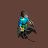

Our goal here is to describe a way of managing graphical rendering on the Nintendo DS that may be relevant for some types of games, notably a lightweight isometric engine suitable for RPG-like games.
This consists on:
We based most of the technical choices on our guide to homebrew development for the Nintendo DS.
We are discussing here only about the graphical rendering of the underlying game world, which is to be managed by the game engine. Audio content in general is not discussed here, see Helix-OSDL instead.
The game will use a lot of 2D assets, including many animated sprites from various sources, including converted versions from Reiner's Tilesets.
Even if most sprites will be scaled down and some animation frames may be removed due to space constraint, one of the main challenges will be to keep a lower enough memory footprint so that the graphical content fits in the scarce memory resources of the DS.
This will involve using fully all the VRAM banks of the DS, but also using a double-layered level of cache, as these banks will not suffice: first level of cache will be the DS main RAM, second one the DS cartridge.
We plan to have one screen (the top one) of the DS dedicated to the in-world rendering (top-down isometric view), whereas the bottom one will display the game user interface (stats, input device as mouse-like pointer or virtual keyboard, textual descriptions, close-up views, etc.).
In-world rendering being the most intensive task, the main 2D core will be devoted to it (so it will be associated to the top screen). Thus the user interface will rely on the sub core, on the bottom screen. No 3D rendering is planned.
Based on the bank abilities, the in-game bank layout we chose is:
| Bank name | Bank size (in Kilobytes) | Bank owner | Intended role |
|---|---|---|---|
| VRAM_A | 128 | Main engine | Sprite Graphics |
| VRAM_B | 128 | Main engine | Sprite Graphics |
| VRAM_C | 128 | Sub engine | Background |
| VRAM_D | 128 | Main engine | Background |
| VRAM_E | 64 | Main engine | Sprite Graphics |
| VRAM_F | 16 | Main engine | Sprite Graphics |
| VRAM_G | 16 | Main engine | Sprite Graphics |
| VRAM_H | 32 | Sub engine | Background |
| VRAM_I | 16 | Main engine | Extended palettes |
Main reasons for that is that we want to dedicate as much as possible memory for the main core, notably to hold as much sprites as possible. Bank C is the only one of the four main banks to be able to hold the sub background, D cannot contain main sprite graphics, etc. The sub engine does not need any sprite.
The game scenes will be made of a static background for environment (grounds, stairs, walls, non-interactive elements, i.e. non-breakable non-movable) on top of which several layers of elements will exist (characters, monsters, furnitures, doors, carpets, objects, etc.).
Static backgrounds will be stored in background memory, whereas all other elements will be sprites.
These tile-based (not framebuffer-based) static elements are not expected here to be scaled, shared or rotated, unless for some special effects. Thus text backgrounds will be mostly used. We prefer relying on the 8-bit color mode (256 colors), as rendering might be a bit poor with 4-bit color mode (16 colors).
Among the available sprite color schemes, the mode usually chosen for games is the one with 16 palettes, each of 256 colors. It is a good trade-off indeed. Simple implementations could cope with one general-purpose palette for all sprites (using an appropriate master palette), whereas more complex ones could associate a palette to a given sprite (usually, animated character). The problem is that it would imply that no more than 16 types of sprites could be displayed simultaneously in the in-world view, which would be a considerable limitation.
We keep in mind most of our sprites will come from the aforementioned Reiner's Tilesets. If we take Swordstan as an example (most probably our main character, as having multiple animations with multiple outside appearances), the source image (BMP in 24 Bit TrueColor), could be (taken from swordstan shield 96x bitmaps/attack se0000.bmp) :
The same image (in PNG) with a 256-color dedicated optimal palette (i.e. all its colors have been chosen specifically for this image) looks very similar:
A palette shared by all graphics can be enforced. As index #0 is reserved for transparency (colorkey), there are 255 colors to be chosen, in [1,255]. Colors have to respect the x555 BGR format (5 bits for each color component, they are thus in [0,31]).
Thus a palette describing n colors is a simple file (whose extension is preferably pal, ex: myPalette.pal) containing n 16-bit encoded colors (thus the file occupies 2.n bytes).
We had chosen initially to generate our shared (master) palette with a python script we called generate_master_palette.py.
This palette aims at representing any bitmap image (as opposed to a palette made for a specific set of graphics), as we will have thousands of frames that will have to rely on it.
The base of this palette is a 240-color 6-8-5 palette: for each of 6 levels of red regularly distributed in the range of color component, there are 8 levels of green, and for each of these there are 5 levels of blue. Therefore 6*8*5 = 240 different colors are listed. Ranges have been chosen in function of the sensibility of the normal human eye to every primary color.
On the 15 remaining colors (255-240), 8 are used for pure greys (which were lacking from the base palette). The 7 last colors have been specifically selected in frames from various characters (notably Stan), to match them more closely.
When running the generate_master_palette.py script, following lines are output:
|
Three palette files have been generated:
|
master-palette-quantized.rgb is the same palette, but each color component is quantized to the only 32 levels already mentioned, instead of the 256 levels of the original palette. This quantized palette seems not too different from the original one: .
Note however that the colorkey had to be skipped for this palette, otherwise the color-reduction algorithm could use that color to approximate other colors, which is not wanted.
finally, master-palette.pal corresponds to the quantized palette in a format suitable for the DS, i.e. each color being defined in a 16-bit x555 BGR format (most significant bit set to 1, then blue, green and red, each component on 5 bits).
There is a catch though: the DS screens display colors darker than they are requested. To compensate that, we have to transform the palette that will be used by the DS so that its colors will be brighter: once dark-displayed on the DS they should look like expected from the PC. This transformation is called gamma-correction, each normalized color component is to be set at the power 1/gamma before being denormalized.
This operation is automatically done by our script on the actual DS palette (master-palette.pal). We retained a gamma of 2.3 for the average DS screen (intermediate way between DS Fat and DS Lite, see also this discussion). The gamma-corrected palette looks brighter than the original, as expected: 
Note that pre-processed images have to be be color-reduced against the same palette, but with no gamma correction (master-palette-quantized.rgb), so that their display is correct.
Now we can compare in a row:

The result seems very good indeed, colors are well preserved in non gamma-corrected images. Note however that the colorkey changed a bit in the third and fourth images, due to the quantization and to the gamma-correction.
The three transformed images have been obtained thanks to:
|
Note that, for this explanation, the gamma-corrected image was obtained directly with ImageMagick, not using:
|
Here is a screenshot of our testOSDLVideoFramebuffer test program taken with the NO$GBA emulator:
It allows to better figure out the available sprite sizes: yellow is for height of 8 pixels, white for 16, blue of 32 and cyan for 64. We deemed the most appropriate size of a character is in general the third blue shape, the 32x32 square: with its 4x4=16 tiles, its memory footprint should be bearable, and, compared to the rest of the screen, there is enough room to display the environment of the character (not too big, not too small).
Using Swordstan again as an example, knowing that Reiner's Tilesets offer bigger frames, the source image could be:

Resizing is preferably performed thanks to the Lanczos filter: , resulting in sharper images than (bi)linear: or (bi)cubic:
These resized images have been obtained thanks to ImageMagick with following commands:
convert swordstan-original.png -filter Lanczos -resize 50x50 swordstan-IM-Lanczos.pngconvert swordstan-original.png -filter triangle -resize 50x50 swordstan-IM-Bilinear.pngconvert swordstan-original.png -filter Cubic -resize 50x50 swordstan-IM-Bicubic.pngLet's take the character that is most probably the most complex one that will have to render: Stan.
First of all Stan has 8 different outside looks, sorted roughly according to the order in which they might appear in a story (example images are in low quality):


To each of these different outside looks correspond a set of attitudes (behaviours in action). Different looks have often different sets of attitudes.
For example, the unarmed Stan can:
For each attitude, eight directions have always to be taken into account : character facing north, south, west, east, and the four related diagonals.
As characters are usually asymmetric, one cannot deduce for example eastward animations from westward ones (showing the character rotate clockwise):
Finally, for each direction a given character attitude can be decomposed into a series of frames.
For example a Stan with sword and shield walking eastward uses following 8 frames in a cycle:
The number of frames depends on the attitude, but not on the direction: talking uses 7 frames, whereas walking 8.
Animations must be rendered for various game elements: characters (player character(s), NPC, monsters, etc.), special effects (explosions, fountains, etc.), animated objects (drawing bridge, door, etc.).
A given element (say, a character) can have multiple outside looks (unarmed, or with different weapons, clothing, injuries, etc.).
For a given outside look, various attitudes might be available (walking, running, fighting, etc.).
An attitude has usually to be defined according to 8 directions.
For each direction, a number of frames makes the effective animation.
Thus one has to plan NanimatedElements x Nlooks x Nattitudes x Ndirections x Nframes. Most games, just counting the characters (friend, foe, monsters, etc.), have to have at least a dozen of them.
Considering the worst case, the main character Stan (who is the most detailed one), we count roughly 8 looks x 7 attitudes on average x 8 directions x 7 frames on average = 3136 frames. This is quite huge.
Considering the average 27-kilobyte original image might be trimmed and reduced for the DS to 1 kilobyte (1024 = 32x32 pixels, as discussed in the sprite size section and 8 bits per pixel, as discussed in the sprite color section), the footprint might be, only for the characters, roughly equal to 12 characters x 3136 frames x 1024 bytes = 36 megabytes. We chose not to remove frames from animations, as fluidity is important. Moreover it would be a shame not to take advantage of assets of such quality.
Compared to the overall 656 kilobytes of VRAM memory, to the 4 megabytes of RAM available for code, sounds, other graphical elements, and to the up to 128 megabytes of storage provided by a commercial cartridge, this is a challenge that may be met if using appropriate streaming and caching.
After having taken into account all previous constraints (size, formats, colors, etc.), we chose the following process, that should led from the raw assets (coming for Reiner or other sources) to the precomputed content ready and optimized for the DS.
First step: per-animated object content sorting, to create a frame hierarchy based on: outside looks, then attitudes, then directions, then ordered frames.
Then, for each frame:
Finally, creation of:
To avoid to store too many informations in index files, filenames should respect the following conventions, so that they can be deduced rather than stored in an associative map.
The filename for a frame is made of a set of alphanumerical fields and a suffix: F1-F2-F3-F4-F5.osdl.frame.
Fields are:
A given field is not specific to the previous one. For example, the outside look (F2) ArmedWithASword may apply to multiple characters (F1) : Stan, but also all characters whose outside look can be described as "ArmedWithASword".
Each field is described by a look-up associative table (identifier repository), a key being a human-friendly unique symbol (ex: ArmedWithASword), each value being the numerical identifier of this key (positive integer starting at 1, ex: 27), to be interpreted in the context of the type they are associated with (here it is an outside look, we may have for example an attitude identifier of 27, which would be totally unrelated to the previous 27).
The table layout is a set of ASCII lines, each line specifying a key/value pair, the key being made of one word in CamelCase, the value being deduced from of the number of the line in the file. Thus, if the NorthEast key is at line 2, NorthEast = 2. Keys are sorted in alphabetical order (the one of the sort command).
The repository of:
Frame identifiers start from 1 onward, and go typically to 6.
All the assets which we transformed like described are referenced in our Asset Map (see notice below).
Note: this is currently an intentional broken link when searched from the Internet (non-local use). It is to comply with the will of the author of Reiner's Tilesets, whose only rule is not to have concurrent web pages to his, so that he can present his work as wanted. That's fair, and thanks again Reiner for your beautiful artwork !
|
All of them are free and open source. They have been used on GNU/Linux, but many of them are cross-platform.
All of them are free and open source. They have been used on GNU/Linux, but many of them are cross-platform.
TONC has been a powerful documentary source to better target the Nintendo DS hardware and understand the various subtleties of tiled graphics.
As many of our graphical assets come from the splendid work available in Reiner's Tilesets, some specific informations are gathered here.
Orginal images are BMP, usually with a kaki (greenish) colorkey: 6a4c30 in hexadecimal.
If you have information more detailed or more recent than those presented in this document, if you noticed errors, neglects or points insufficiently discussed, drop us a line!